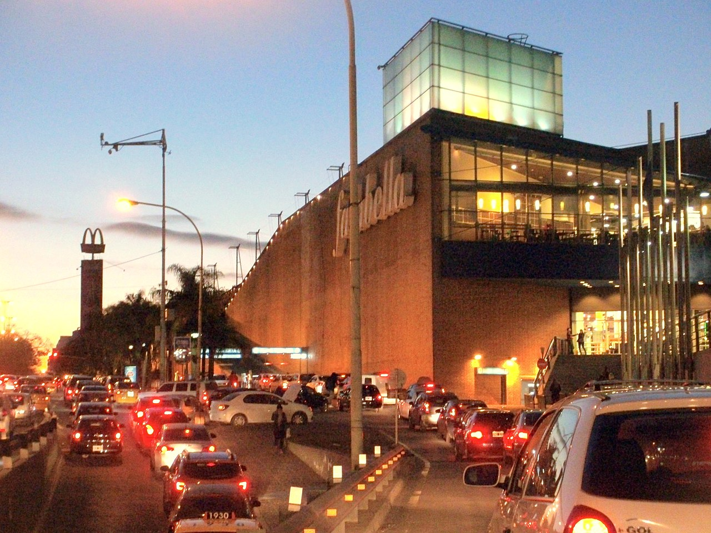

¿QUE ES FALABELLA?
Somos profunda transformación cultural y una nueva manera de trabajar mirando a los próximos años, potenciando capacidades que ya son parte de nuestra propuesta de valor e incorporando otras nuevas. En este contexto, entendemos la necesidad de convertirnos en una organización más ágil y flexible, manteniendo nuestra tradición de tener al cliente y a nuestros colaboradores siempre al centro de toda nuestra gestión. Esta constante transformación cultural que impulsamos está basada en vivir y promover nuestros valores y principios corporativos, los cuales son claves para el desarrollo de la estrategia de Ecosistema y constituyen el motor de nuestras acciones en el día a día.
SU HISTORIA
El 11 de noviembre de 1952, la cadena Sears Roebuck del Perú S.A abre su primera tienda en el distrito de San Isidro. Posteriormente abrió nuevos locales en el Centro de Lima, Miraflores y San Miguel.Tienda en el distrito de San Miguel (Lima) con el nombre Saga Falabella, utilizado hasta 2018.En 1988, la cadena fue renombrada como "Sociedad Andina de los Grandes Almacenes", con las iniciales SAGA, luego de que Sears abandonara sus operaciones en Sudamérica. El 18 de noviembre de 1994 SAGA inició sus operaciones en la Bolsa de Valores de Lima. En 1995, Falabella adquiere SAGA y así concreta su ingreso al mercado peruano, introduciendo el mismo año la tarjeta de crédito CMR. Falabella comenzó sus actividades a inicios de 1996, sin embargo, los nuevos dueños decidieron mantener el nombre Saga y anexarlo al nombre Falabella para establecerse mejor en el mercado peruano. En provincias, desde el año 2000 se inauguraron tiendas de formato express en ciudades como Trujillo y Chiclayo, hasta que, en el año 2002, Saga Falabella inauguró una tienda convencional en la ciudad de Arequipa, buscando descentralizar su oferta en provincias. En el año 2003 inauguraron otra tienda en la ciudad de Piura. La expansión dentro del Perú continuaría con una nueva tienda en Chiclayo en 2005 y otra en Trujillo un año después. El 8 de septiembre de 2010, Saga Falabella inauguró una tienda en el centro comercial Open Plaza Angamos, que posee la primera "tienda ecológica" del Perú, ya que tiene sistemas de ahorro de energía y agua. En agosto de 2015, Falabella inaugura la tienda número 100 en América Latina, situada en el centro comercial Real Plaza Centro Cívico (Cercado de Lima).Tras 23 años de operación en el Perú, el 24 de enero de 2018 formal y parcialmente se elimina el nombre Saga y la denominación cambia simplemente a Falabella, al igual que en los demás países. Este cambio se había iniciado en diciembre de 2017 con la versión peruana del tradicional spot navideño con Chayanne, el cual fue el primero en omitir Saga. En 2019 Falabella inauguró otra tienda en el centro comercial Real Plaza Puruchuco en el distrito de Ate.En 2021, se retomaron las tiendas de formato express con una apertura en la ciudad de Huaraz. al año siguiente se inauguró otra tienda express en Tacna. En 2021 Falabella inauguró su primera tienda en la ciudad de Cusco en el Centro Comercial Real Plaza Cuzco. Los principales rostros de Falabella en este país son Gisele Bündchen, Christian Meier, Ricky Martin, Úrsula Corberó, Carolina Cano y Alondra García-Miró. Actualmente posee 35 tiendas en Perú (Lima, Arequipa, Trujillo, Cusco, Chiclayo, Piura, Cajamarca, Huancayo, Chimbote, Iquitos e Ica) y una gran variedad de marcas registradas como Sybilla, Commodore, Doo Australia, entre otras.